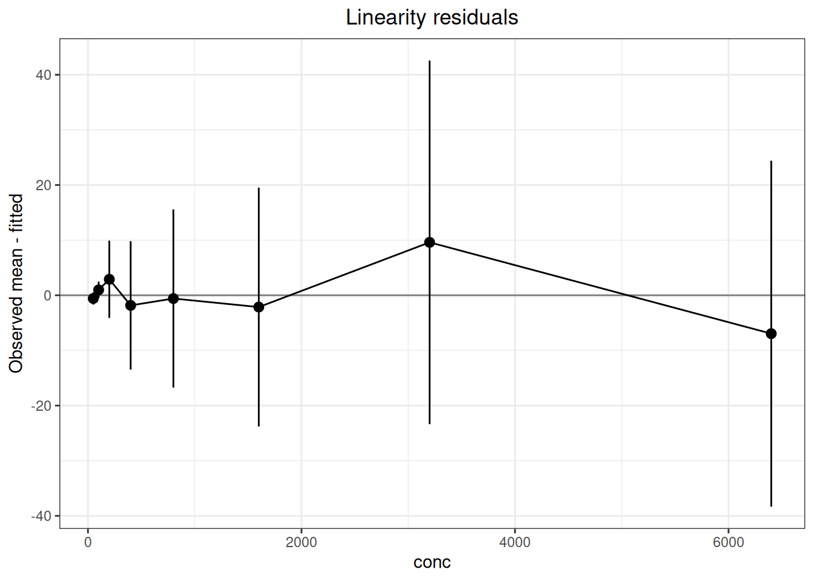
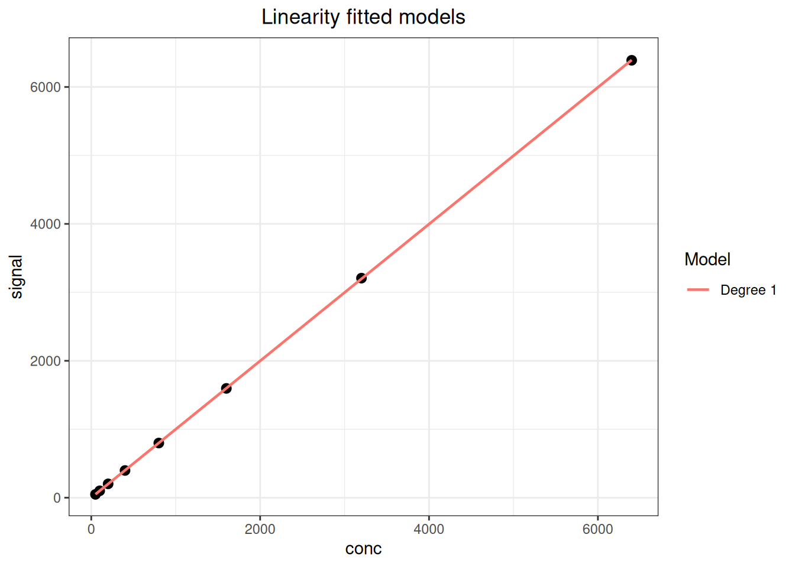
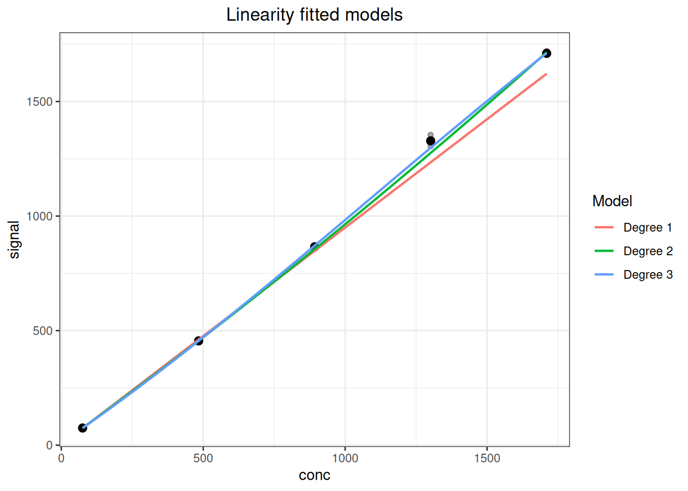
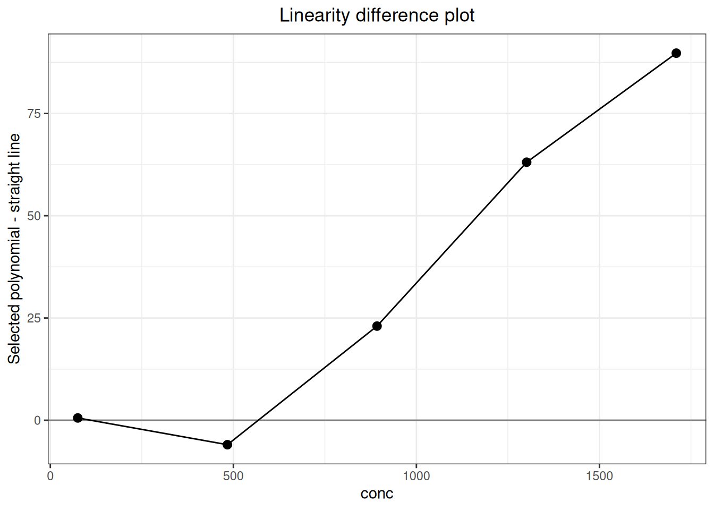

%%{init: {"theme":"base","themeVariables":{"primaryColor":"#EAF2FB","primaryBorderColor":"#2780E3","primaryTextColor":"#212529","lineColor":"#6C757D","secondaryColor":"#EAF7E6","tertiaryColor":"#FFF4E8","fontSize":"13px"},"flowchart":{"nodeSpacing":18,"rankSpacing":24,"padding":6}}}%%
flowchart LR
A["设计 LOW/HIGH<br/>与稀释水平"] --> B["linearity_replicates()<br/>linearity_panel()"]
B --> C["重复测量长表"]
C --> D["linearity()<br/>内部完成水平汇总与拟合"]
D --> E["残差、区间<br/>与 ADL 比较"]
E --> F["linearity_endpoints()<br/>核对报告端点"]
F --> G["仅在验证范围内<br/>声明线性"]
classDef input fill:#EAF2FB,stroke:#2780E3,color:#212529
classDef process fill:#EAF7E6,stroke:#3FB618,color:#212529
classDef output fill:#F4EEFB,stroke:#9954BB,color:#212529
class A,C input
class B,D,E,F process
class G output
14 线性分析
线性（linearity）评价测量系统在整个工作范围内，测得结果与被测物浓度（或目标量值）之间是否存在可接受的线性关系，通常采用稀释数据，按 CLSI EP06 分析偏差。本文统一使用专用的 linearity() 工作流完成水平汇总、权重、直线残差、允许偏离线性（ADL）和探索性多项式分析。
重要使用边界
EP06 第 2 版的核心是相对于预设允许偏离线性（ADL）评价直线残差，而不是以相关系数或“二次项不显著”单独证明线性。method="linear" 在水平均值上拟合；method="polynomial" 复现已被取代的 EP6-A 思路，应明确标为探索性。函数不替代样品配制、可交换性、端点覆盖、干扰和报告范围的专业判断。
分析流程：验证报告范围内的线性和允许偏离
代码
library(ivdtools)
library(readr)14.1 主要函数
| 函数 | 主要用途 | 关键输入或输出 |
|---|---|---|
linearity_replicates() |
按精密度和 ADL 计算每水平重复数 | imprecision、adl、 family_error |
linearity_panel() |
设计 HIGH/LOW 配制系列 | proportion_high、high、low、 total_volume |
linearity_endpoints() |
计算 LOW/HIGH 实验室确认目标 | LLoQ/ULoQ 与低高端 CV |
linearity() |
EP06 参数化线性分析 | method、weights、conf.level、 adl_* |
plot() |
绘制重复结果、精密度、拟合、残差或模型差异 | type |
14.1.0.1 设计重复数与配制水平
代码
linearity_replicates(
imprecision = 4,
adl = 5,
levels = 8,
family_error = 0.10
) Type: relative
Imprecision : 4
ADL : 5
True deviation : 0
Effective ADL : 5
Level probability : 0.98691628
Z : 2.4814824
Calculated replicates : 3.940963
Replicates : 4
Recommend four : FALSE代码
linearity_panel(
proportion_high = seq(0, 1, length.out = 6),
high = 1000,
low = 10,
total_volume = 1
) Sample: S1
Proportion high : 0
Proportion low : 1
Expected : 10
Relative concentration : 0.01
Total volume : 1
High volume : 0
Low volume : 1
Sample: S2
Proportion high : 0.2
Proportion low : 0.8
Expected : 208
Relative concentration : 0.208
Total volume : 1
High volume : 0.2
Low volume : 0.8
Sample: S3
Proportion high : 0.4
Proportion low : 0.6
Expected : 406
Relative concentration : 0.406
Total volume : 1
High volume : 0.4
Low volume : 0.6
Sample: S4
Proportion high : 0.6
Proportion low : 0.4
Expected : 604
Relative concentration : 0.604
Total volume : 1
High volume : 0.6
Low volume : 0.4
Sample: S5
Proportion high : 0.8
Proportion low : 0.2
Expected : 802
Relative concentration : 0.802
Total volume : 1
High volume : 0.8
Low volume : 0.2
Sample: S6
Proportion high : 1
Proportion low : 0
Expected : 1000
Relative concentration : 1
Total volume : 1
High volume : 1
Low volume : 0代码
linearity_endpoints(
lloq = 10, uloq = 1000,
cv_high = 5, cv_at_lloq = 20, cv_at_k_lloq = 15
)CLSI EP06-Ed2 target concentrations
LOW target: 14.14116
HIGH target: 924.0072重复数函数只报告统计设计量；最终水平数和重复数还应满足研究方案、适用标准与样本资源约束；计算 LOW/HIGH 限制在实验室确认目标浓度使用，不适用于厂商的验证过程。
14.1.0.2 直线模型、区间与 ADL
下面直接使用每行一条重复测量的长表。sample 标识浓度水平，x 为预期值；同一 sample 内的 x 必须恒定。
代码
linearity_data <- read_csv("./data/014-线性分析/linearity-dilution.csv", show_col_types = FALSE)
linearity_data <- as.data.frame(linearity_data)
lin_ep06 <- linearity(
linearity_data,
sample = "conc",
result = "signal",
x = "conc",
method = "linear",
weights = "level_variance",
conf.level = 0.95,
multiplicity = "familywise",
adl_rel = 5
)
lin_ep06Linearity regression analysis
Analysis settings
Method: linear (EP06-Ed2)
Observations / levels: 24 / 8
Intercept: estimated
Weights: level_variance
Fit unit: level_mean
Model comparison
Degree: 1
Observations : 8
Parameters : 2
Residual degrees of freedom : 6
RSS : 158.54622
Weighted RSS : 7.7423768
SY.X : 5.1404639
Weighted SY.X : 1.135956
R-squared : 0.99998216
Adjusted R-squared : 0.99997918
Regression coefficients
Estimate Std. Error t value Pr(>|t|)
a -0.12687310 0.39305554 -0.32279 0.75781
b 0.99947673 0.00172361 579.87366 1.7753e-15 ***
---
Signif. codes: 0 '***' 0.001 '**' 0.01 '*' 0.05 '.' 0.1 ' ' 1
Sample fit information
Sample Expected Predicted Observed mean Weight Observed SD n
50 50 49.8470 49.2667 6.08108108 0.702377 3
100 100 99.8208 100.8000 3.29670330 0.953939 3
200 200 199.7685 202.6667 0.15133681 4.452340 3
400 400 399.6638 397.8333 0.05484127 7.396170 3
800 800 799.4545 798.8667 0.02848913 10.261741 3
1600 1600 1599.0359 1596.9000 0.01585959 13.753545 3
3200 3200 3198.1987 3207.8000 0.00684119 20.940869 3
6400 6400 6396.5242 6389.5667 0.00755775 19.923437 3
Sample bias information
Sample Residual Recovery bias Residual (%) Recovery bias (%) ADL Decision
50 -0.580297 -0.733333 -1.1641563 -1.466667 2.49235 Within ADL
100 0.979200 0.800000 0.9809583 0.800000 4.99104 Within ADL
200 2.898194 2.666667 1.4507766 1.333333 9.98842 Within ADL
400 -1.830484 -2.166667 -0.4580060 -0.541667 19.98319 Within ADL
800 -0.587842 -1.133333 -0.0735304 -0.141667 39.97273 Within ADL
1600 -2.135890 -3.100000 -0.1335736 -0.193750 79.95179 Within ADL
3200 9.601346 7.800000 0.3002111 0.243750 159.90993 Within ADL
6400 -6.957514 -10.433333 -0.1087702 -0.163021 319.82621 Within ADL
Definitions
Residual = observed mean - predicted value.
Recovery bias = observed mean - expected value.
Recovery bias (%) = 100 * recovery bias / expected value.
Residual (%) denominator: predicted.
ADL decision metric = residual.代码
plot(lin_ep06, type = "fit")代码
plot(lin_ep06, type = "residual")
adl_exceeded 是实测线性偏离与调用者提供 ADL 的数值比较，不代表完整的产品合格结论。多项式模式用于复现旧版 EP6-A 思路，在 EP06-Ed2 语境下应标为探索性分析。
14.1.1 设计量、权重与允许偏离公式
代码
linearity_replicates(
imprecision, adl, type = c("relative", "absolute"),
level_probability = 0.99, levels = NULL, family_error = NULL,
true_deviation = 0, min_replicates = 2
)
linearity_panel(proportion_high, high, low = 0,
total_volume = NULL, sample = NULL)
linearity(
data, sample, result, x, method = c("linear", "polynomial"),
intercept = TRUE,
weights = c("equal", "level_variance", "pooled", "precision_profile"),
variance_group = NULL,
conf.level = NULL, multiplicity = c("familywise", "none"),
adl = NULL, adl_abs = NULL, adl_rel = NULL
)若单水平中心覆盖概率为 \(P_L\)，重复性为 \(s\) 或 CV，预期真实偏离为 \(\delta_0\)，有效 ADL 为 \(A_{\mathrm{eff}}=A-\delta_0\)，重复数按
\[ n=\left\lceil\left(\frac{z_{(1+P_L)/2}s}{A_{\mathrm{eff}}}\right)^2\right\rceil \]
并受 min_replicates 限制。给出总族错误概率 \(\alpha_F\) 和 \(L\) 个水平时，\(P_L=(1-\alpha_F)^{1/L}\)。相对型输入统一使用百分数单位，例如 5 表示 5%。
HIGH/LOW 面板中，高样品比例为 \(p_h\) 时
\[ x_{\mathrm{expected}}=p_hx_H+(1-p_h)x_L. \]
linearity(method="linear") 先按样本汇总 \(\bar y_j,s_j,n_j\)，拟合 \(\bar y_j=\beta_0+\beta_1x_j+e_j\)。权重差异为：
weights |
水平均值拟合权重 | 适用含义 |
|---|---|---|
equal |
\(1\) | 各水平等权 |
level_variance |
\(n_j/s_j^2\) | 使用各水平自身重复方差 |
pooled |
\(n_j/\widehat\sigma_g^2\) | 按 variance_group 明确指定的相邻水平组合并方差；不自动分组 |
precision_profile |
\(1/\widehat\sigma_j^2\) | 用 SD—均值轮廓预测方差 |
直线残差为 \(r_j=\bar y_j-\widehat y_j\)。adl_abs、adl_rel 或逐水平 adl 同时给出时，函数逐水平采用最大的允许值；相对 ADL 转为绝对量后比较
\[ |r_j|>ADL_j. \]
weights="pooled" 时，variance_group 必须指向原数据中的分组列；同一样本水平的分组值必须相同，各组在按 \(x\) 排序后必须连续且至少含两个水平。组内合并方差为
\[ \widehat\sigma_g^2= \frac{\sum_{j\in g}(n_j-1)s_j^2}{\sum_{j\in g}(n_j-1)}, \]
水平均值回归权重为 \(n_j/\widehat\sigma_g^2\)。percent_base 决定相对残差分母是直线预测值、\(x\) 还是观测均值。multiplicity="familywise" 把总体覆盖度换为逐水平覆盖度 \(C_L=C^{1/L}\)；"none" 则每个水平直接使用 \(C\)。
linearity_replicates() 返回设计重复数；linearity_panel() 返回配制水平表；linearity_endpoints() 返回低、高端目标；linearity() 返回含水平汇总、拟合、残差和 ADL 比较的分析对象；plot() 返回 ggplot 对象。
14.2 分析案例
14.2.1 示例一：系列稀释的线性偏差
稀释系列包含 8 个浓度水平、每水平 3 次重复，共 24 行：
代码
dilution <- read_csv("./data/014-线性分析/linearity-dilution.csv", show_col_types = FALSE)
dilution <- as.data.frame(dilution)
head(dilution, 6) conc replicate signal
1 50 1 48.6
2 50 2 49.2
3 50 3 50.0
4 100 1 101.3
5 100 2 99.7
6 100 3 101.4linearity() 直接接收每行一条重复结果的长表，在函数内部按 sample 汇总均值、SD 和重复数，再拟合水平均值。这里用各水平等权重，并以预设的相对 ADL 评价直线残差：
代码
fit_lin <- linearity(
dilution,
sample = "conc",
result = "signal",
x = "conc",
method = "linear",
weights = "equal",
conf.level = 0.95,
multiplicity = "familywise",
adl_rel = 5
)
print(fit_lin)Linearity regression analysis
Analysis settings
Method: linear (EP06-Ed2)
Observations / levels: 24 / 8
Intercept: estimated
Weights: equal
Fit unit: level_mean
Model comparison
Degree: 1
Observations : 8
Parameters : 2
Residual degrees of freedom : 6
RSS : 146.65863
Weighted RSS : 146.65863
SY.X : 4.9439969
Weighted SY.X : 4.9439969
R-squared : 0.99999571
Adjusted R-squared : 0.999995
Regression coefficients
Estimate Std. Error t value Pr(>|t|)
a 0.975290473 2.205878722 0.44213 0.67388
b 0.998893935 0.000844269 1183.14720 < 2e-16 ***
---
Signif. codes: 0 '***' 0.001 '**' 0.01 '*' 0.05 '.' 0.1 ' ' 1
Sample fit information
Sample Expected Predicted Observed mean Weight Observed SD n
50 50 50.920 49.2667 1 0.702377 3
100 100 100.865 100.8000 1 0.953939 3
200 200 200.754 202.6667 1 4.452340 3
400 400 400.533 397.8333 1 7.396170 3
800 800 800.090 798.8667 1 10.261741 3
1600 1600 1599.206 1596.9000 1 13.753545 3
3200 3200 3197.436 3207.8000 1 20.940869 3
6400 6400 6393.896 6389.5667 1 19.923437 3
Sample bias information
Sample Residual Recovery bias Residual (%) Recovery bias (%) ADL Decision
50 -1.653321 -0.733333 -3.2468990 -1.466667 2.54600 Within ADL
100 -0.064684 0.800000 -0.0641295 0.800000 5.04323 Within ADL
200 1.912589 2.666667 0.9527025 1.333333 10.03770 Within ADL
400 -2.699531 -2.166667 -0.6739850 -0.541667 20.02664 Within ADL
800 -1.223772 -1.133333 -0.1529542 -0.141667 40.00452 Within ADL
1600 -2.305587 -3.100000 -0.1441708 -0.193750 79.96028 Within ADL
3200 10.364116 7.800000 0.3241384 0.243750 159.87179 Within ADL
6400 -4.329810 -10.433333 -0.0677179 -0.163021 319.69482 Within ADL
Definitions
Residual = observed mean - predicted value.
Recovery bias = observed mean - expected value.
Recovery bias (%) = 100 * recovery bias / expected value.
Residual (%) denominator: predicted.
ADL decision metric = residual.ADL 是否超限只能按方案预先规定的限值解释。 weights 可选等权、各水平自身方差、预设分组的合并方差或精密度轮廓；选择应与试验设计和异方差结构一致。
代码
plot(fit_lin, type = "fit")
代码
plot(fit_lin, type = "residual")
14.2.2 示例二：对半稀释的多项式分析
数据为 5 个浓度水平 × 3 复孔：
代码
poly_data <- read_csv("./data/014-线性分析/linearity-polynomial.csv", show_col_types = FALSE)
poly_data <- as.data.frame(poly_data)
head(poly_data, 6) conc replicate signal
1 75.00 1 75.0
2 75.00 2 75.0
3 75.00 3 74.4
4 483.75 1 454.1
5 483.75 2 455.3
6 483.75 3 456.0代码
fit_poly <- linearity(
poly_data,
sample = "conc",
result = "signal",
x = "conc",
method = "polynomial",
weights = "level_variance",
max_degree = 3,
poly_alpha = 0.05,
percent_base = "predicted"
)
print(fit_poly)Linearity regression analysis
Analysis settings
Method: polynomial (EP6-A, exploratory)
Observations / levels: 15 / 5
Intercept: estimated
Weights: level_variance
Fit unit: observation
Selected degree: 3
Model comparison
Degree: 1
Observations : 15
Parameters : 2
Residual degrees of freedom : 13
RSS : 52631.917
Weighted RSS : 550.93015
SY.X : 63.62868
Weighted SY.X : 6.5099341
R-squared : 0.99902344
Adjusted R-squared : 0.99894832
Degree: 2
Observations : 15
Parameters : 3
Residual degrees of freedom : 12
RSS : 10241.163
Weighted RSS : 30.175825
SY.X : 29.213529
Weighted SY.X : 1.5857655
R-squared : 0.99994651
Adjusted R-squared : 0.9999376
Degree: 3
Observations : 15
Parameters : 4
Residual degrees of freedom : 11
RSS : 4360.5146
Weighted RSS : 15.881083
SY.X : 19.910058
Weighted SY.X : 1.2015552
R-squared : 0.99997185
Adjusted R-squared : 0.99996417
Selected : Yes
Regression coefficients (degree 1)
Estimate Std. Error t value Pr(>|t|)
a 3.26682147 1.60149874 2.03985 0.062224 .
b 0.94635339 0.00820623 115.32135 < 2e-16 ***
---
Signif. codes: 0 '***' 0.001 '**' 0.01 '*' 0.05 '.' 0.1 ' ' 1
Regression coefficients (degree 2)
Estimate Std. Error t value Pr(>|t|)
a 7.07723e+00 4.71485e-01 15.0105 3.8555e-09 ***
b 8.98365e-01 3.88796e-03 231.0636 < 2.22e-16 ***
c 5.87581e-05 4.08310e-06 14.3905 6.2393e-09 ***
---
Signif. codes: 0 '***' 0.001 '**' 0.01 '*' 0.05 '.' 0.1 ' ' 1
Regression coefficients (degree 3, selected)
Estimate Std. Error t value Pr(>|t|)
a 1.08167e+01 1.24094e+00 8.71655 2.8637e-06 ***
b 8.38991e-01 1.90976e-02 43.93179 1.0374e-13 ***
c 1.93013e-04 4.27784e-05 4.51193 0.0008837 ***
d -5.97186e-08 1.89786e-08 -3.14662 0.0092980 **
---
Signif. codes: 0 '***' 0.001 '**' 0.01 '*' 0.05 '.' 0.1 ' ' 1
Sample fit information
Sample Expected Predicted Observed mean Weight Observed SD n
75 75.00 74.8015 74.800 8.33333333 0.346410 3
483.75 483.75 455.0861 455.133 1.08303249 0.960902 3
892.5 892.50 870.9067 865.967 0.01552474 8.025792 3
1301.25 1301.25 1297.7933 1328.467 0.00166688 24.493332 3
1710 1710.00 1711.2760 1710.433 0.01516914 8.119319 3
Sample bias information
Sample Residual Recovery bias Residual (%) Recovery bias (%) DL ADL Decision
75 -0.00153386 -0.200000 -0.00206599 -0.2666667 0.558208 NA Not assessed
483.75 0.04720887 -28.616667 0.01023909 -5.9155900 -5.979149 NA Not assessed
892.5 -4.94005897 -26.533333 -0.58263161 -2.9729225 23.019504 NA Not assessed
1301.25 30.67332481 27.216667 2.48425504 2.0915786 63.084173 NA Not assessed
1710 -0.84264426 0.433333 -0.05196596 0.0253411 89.744861 NA Not assessed
Definitions
Residual = observed mean - predicted value.
Recovery bias = observed mean - expected value.
Recovery bias (%) = 100 * recovery bias / expected value.
Residual (%) denominator: predicted.
ADL decision metric = deviation from linearity (DL).
Warnings / interpretation notes
1 duplicate sample/result/x row(s) were retained.
Polynomial regression follows superseded EP6-A and is exploratory under EP06-Ed2. 代码
plot(fit_poly, type = "fit")
代码
plot(fit_poly, type = "difference")
14.2.3 标准案例：CLSI EP06 第 2 版附录 G 两重复研究
附录 G 使用 HIGH 与空白按 0.1～1.0 相对浓度配制 10 个水平，每水平测量 2 次。预设线性区间为 55～500 U/L，允许偏离线性为 ±10%。标准因每水平仅有 2 次重复，将相邻水平的方差分成三组进行合并，再以 \(2/\overline{s^2}\) 作为无截距 WLS 权重。分组列已按标准表 G3 直接写入 CSV，预期浓度也已根据 HIGH 浓度和配制比例写入。
代码
ep06_g <- as.data.frame(read_csv(
"./data/014-线性分析/std-ep06-appendix-g.csv",
show_col_types = FALSE
))代码
ep06_g_ivd <- linearity(
ep06_g, sample = "level", result = "result", x = "expected",
method = "linear", intercept = FALSE,
weights = "pooled", variance_group = "variance_group"
)| 标准位置 | 统计量 | 标准结果 | ivdtools结果 |
|---|---|---|---|
| EP06 Ed2 Appendix G | WLS_slope | 1.0677 | 1.0677 |
| EP06 Ed2 Appendix G | max_abs_deviation_percent | 9.3000 | 9.2644 |
variance_group 将 10 个水平明确分成 1–3、4–7、8–10 三组。分组由用户根据重复性SD—浓度图和预先规定的方案提供，函数不自动选择最有利的分组。
14.2.4 标准案例：CLSI EP06 第 2 版附录 H 双面板研究
附录 H 用 HIGH1 和 HIGH2 分别与空白配制两个 10 水平面板，每水平测量 5 次，共 100 条结果。HIGH1 覆盖高端，HIGH2 覆盖低端；合并后覆盖案例预设的 20～1000 U/L 区间。每水平权重为 \(5/s^2\)，拟合无截距 WLS 直线。CSV 已包含由面板、水平和配制比例确定的sample_id 与expected，读取后可直接进入分析。
代码
ep06_h <- as.data.frame(read_csv(
"./data/014-线性分析/std-ep06-appendix-h.csv",
show_col_types = FALSE
))代码
ep06_h_fit <- function(z) {
fit <- linearity(
z, sample = "sample_id", result = "result", x = "expected",
method = "linear", intercept = FALSE, weights = "level_variance"
)
data.frame(
slope = fit$coefficients$estimate,
max_abs_deviation_percent = max(abs(fit$level_summary$percent_residual_linear))
)
}
ep06_h_combined <- ep06_h_fit(ep06_h)
ep06_h_separate <- do.call(rbind, lapply(
split(ep06_h, ep06_h$panel), ep06_h_fit
))| 标准位置 | 统计量 | 标准结果 | ivdtools结果 |
|---|---|---|---|
| EP06 Ed2 Appendix H | combined WLS slope | 0.9686 | 0.9686 |
| EP06 Ed2 Appendix H | combined maximum deviation (%) | 14.5000 | 14.4759 |
| EP06 Ed2 Appendix H | HIGH1 WLS slope | 0.9496 | 0.9496 |
| EP06 Ed2 Appendix H | HIGH1 maximum deviation (%) | 12.8000 | 12.7612 |
| EP06 Ed2 Appendix H | HIGH2 WLS slope | 1.0013 | 1.0013 |
| EP06 Ed2 Appendix H | HIGH2 maximum deviation (%) | 9.2000 | 9.2134 |
三种分析的最大偏离均未超过案例预设 ±15%，但两个部分面板的重叠、范围覆盖和权重结构是这一结论成立的前提。
14.2.5 标准案例：CLSI EP06 第 2 版附录 I 赋值样品
附录 I 给出 9 个加标样品的真值、10 次测量均值和 SD，但不公布 90 条单次测量结果。因此本例保留标准公布的汇总粒度，不从均值和 SD 反向生成伪原始数据。权重为 \(10/s^2\)，拟合无截距 WLS 直线，预设允许偏离为 ±2%。
代码
ep06_i <- as.data.frame(read_csv(
"./data/014-线性分析/std-ep06-appendix-i-summary.csv",
show_col_types = FALSE
))
ep06_i$weight <- ep06_i$n / ep06_i$sd^2
ep06_i_ivd <- linearity(
ep06_i, sample = "sample", result = "measured_mean", x = "true_value",
method = "linear", intercept = FALSE, weights = ep06_i$weight
)| 标准位置 | 统计量 | 标准结果 | ivdtools结果 |
|---|---|---|---|
| EP06 Ed2 Appendix I | WLS_slope | 1.0045 | 1.0045 |
| EP06 Ed2 Appendix I | max_abs_deviation_percent | 1.7000 | 1.7212 |
复算的最大绝对偏离位于案例预设 ±2% 内。回收偏差与线性偏离回答不同问题：前者相对真值，后者相对最佳拟合直线，不能互相替代。
14.2.6 标准案例：WS/T 408—2024 五水平线性验证
附录 A.4 的 HDL-C 案例包含 5 个水平、每水平 3 次测量。标准关注直线回归剩余标准差 \(s_{y|x}\)、批内标准差 \(s_{WR}\)、二者的 F 比值及非线性标准差 \(s_{NL}\)。
代码
wst408_linearity <- read_csv(
"./data/014-线性分析/std-wst408-linearity.csv",
show_col_types = FALSE
)
wst408_linearity_ivd <- linearity(
as.data.frame(wst408_linearity), sample = "level", result = "measured",
x = "expected", method = "linear", conf.level = 0.95
)| 标准位置 | 统计量 | 标准结果 | ivdtools结果 |
|---|---|---|---|
| WS/T 408 Appendix A.4 | s_yx | 0.0318 | 0.03277 |
| WS/T 408 Appendix A.4 | s_WR | 0.0186 | NA |
| WS/T 408 Appendix A.4 | F | 2.9130 | NA |
| WS/T 408 Appendix A.4 | s_NL | 0.0258 | NA |
linearity() 按 5 个水平均值拟合直线，输出 \(s_{y|x}\approx0.0328\)；标准配套表为 0.0318。标准所需的 \(s_{WR}\)、F 和 \(s_{NL}\) 不是当前对象的公开结果，表中以 NA 明示未实现。
14.2.7 标准案例：YY/T 1789.4—2022 附录 A 线性样本 1
附录 A.5 给出 AFP 线性样本 1 的 14 个稀释水平、每水平 4 次结果。标准先用一至三阶多项式的高阶项显著性选择模型，再以最终直线的逐水平相对偏倚和 ±10% 允许误差判断测量区间。
代码
yyt1789_4 <- read.csv(
"./data/014-线性分析/std-yyt1789-4-appendix-a-sample1.csv"
)
yyt1789_4_linear_p <- linearity(
yyt1789_4, sample = "level", result = "result", x = "dilution",
method = "polynomial", weights = "equal", adl_rel = 10
)
yyt1789_4_linear <- linearity(
yyt1789_4, sample = "level", result = "result", x = "dilution",
method = "linear", weights = "equal", adl_rel = 10
)| 标准位置 | 统计量 | 标准结果 | ivdtools结果 |
|---|---|---|---|
| YY/T 1789.4 Appendix A.5 / level 1 | final-line prediction | 4.28 | 4.284 |
| YY/T 1789.4 Appendix A.5 / level 1 | relative bias (%) | 6.07 | 5.974 |
| YY/T 1789.4 Appendix A.5 / level 2 | final-line prediction | 19.40 | 19.401 |
| YY/T 1789.4 Appendix A.5 / level 2 | relative bias (%) | 5.05 | 5.046 |
| YY/T 1789.4 Appendix A.5 / level 3 | final-line prediction | 34.52 | 34.518 |
| YY/T 1789.4 Appendix A.5 / level 3 | relative bias (%) | 4.46 | 4.453 |
| YY/T 1789.4 Appendix A.5 / level 4 | final-line prediction | 64.75 | 64.752 |
| YY/T 1789.4 Appendix A.5 / level 4 | relative bias (%) | -3.69 | -3.697 |
| YY/T 1789.4 Appendix A.5 / level 5 | final-line prediction | 125.22 | 125.219 |
| YY/T 1789.4 Appendix A.5 / level 5 | relative bias (%) | 7.25 | 7.250 |
| YY/T 1789.4 Appendix A.5 / level 6 | final-line prediction | 246.16 | 246.154 |
| YY/T 1789.4 Appendix A.5 / level 6 | relative bias (%) | 0.47 | 0.467 |
| YY/T 1789.4 Appendix A.5 / level 7 | final-line prediction | 367.10 | 367.089 |
| YY/T 1789.4 Appendix A.5 / level 7 | relative bias (%) | 3.77 | 3.773 |
| YY/T 1789.4 Appendix A.5 / level 8 | final-line prediction | 488.04 | 488.025 |
| YY/T 1789.4 Appendix A.5 / level 8 | relative bias (%) | -4.04 | -4.043 |
| YY/T 1789.4 Appendix A.5 / level 9 | final-line prediction | 608.98 | 608.960 |
| YY/T 1789.4 Appendix A.5 / level 9 | relative bias (%) | -3.05 | -3.051 |
| YY/T 1789.4 Appendix A.5 / level 10 | final-line prediction | 729.92 | 729.895 |
| YY/T 1789.4 Appendix A.5 / level 10 | relative bias (%) | 3.59 | 3.598 |
| YY/T 1789.4 Appendix A.5 / level 11 | final-line prediction | 850.86 | 850.830 |
| YY/T 1789.4 Appendix A.5 / level 11 | relative bias (%) | -3.99 | -3.990 |
| YY/T 1789.4 Appendix A.5 / level 12 | final-line prediction | 971.80 | 971.765 |
| YY/T 1789.4 Appendix A.5 / level 12 | relative bias (%) | 2.60 | 2.607 |
| YY/T 1789.4 Appendix A.5 / level 13 | final-line prediction | 1092.74 | 1092.700 |
| YY/T 1789.4 Appendix A.5 / level 13 | relative bias (%) | -3.20 | -3.198 |
| YY/T 1789.4 Appendix A.5 / level 14 | final-line prediction | 1213.68 | 1213.635 |
| YY/T 1789.4 Appendix A.5 / level 14 | relative bias (%) | 2.56 | 2.566 |
模型选择步骤并不完全等价：标准对水平均值拟合多项式并报告回归标准误， linearity(method="polynomial") 当前对逐次观测拟合，且将该模式标为旧 EP6-A 探索流程；两者自由度和回归标准误不同。因此本例只把包内 method="linear" 的最终直线称为复现，不把 包的多项式选择结果冒充 YY/T 1789.4 的高阶项检验。
标准附录 A.3 的 ADL-PctBnd 临界表还把回归不精密度、水平数和重复数共同换算为临界值；adl_rel=10 是逐水平数值限，未实现 PctBnd 查表规则。这两个“ADL”名称相近但算法不同，本章报告时必须注明采用哪一种。